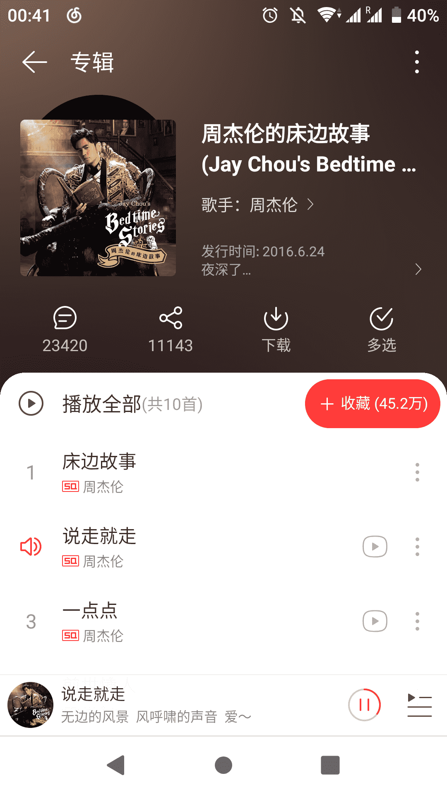
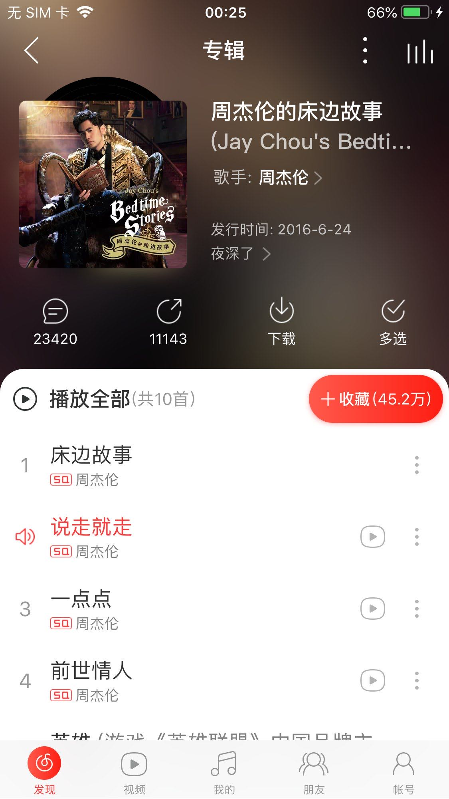

docker解锁网易云音乐所有音乐
概述
解锁网易云音乐客户端变灰歌曲
特性
- 使用 QQ / 虾米 / 百度 / 酷狗 / 酷我 / 咪咕 / JOOX 音源替换变灰歌曲链接 (默认仅启用一、五、六)
- 为请求增加
X-Real-IP参数解锁海外限制，支持指定网易云服务器 IP，支持设置上游 HTTP / HTTPS 代理 - 完整的流量代理功能 (HTTP / HTTPS)，可直接作为系统代理 (同时支持 PAC)
服务端安装并使用镜像
下载镜像
1 | $ docker pull nondanee/unblockneteasemusic |
使用镜像
生成私钥
为了支持https，这里需要生成密钥对：
1 | # 生成 CA 私钥 |
上述步骤完成后
将服务器私钥 (server.key) 和服务器证书 (server.crt) 拷贝到仓库中覆盖原有文件 (若使用 docker，可通过添加 -v /path/to/server.crt:/usr/src/app/server.crt -v /path/to/server.key:/usr/src/app/server.key 参数映射本地路径覆盖原有文件)，再将 CA 证书 (ca.crt) 安装到系统；如果不自行签发，直接安装仓库里的 CA 证书 (ca.crt) 即可
启动容器
1 | $ docker run -d -p 28080:8080 -p 28081:8081 \ |
客户端使用
注意：记得防火墙开放端口 28080
方法一：修改 hosts（不推荐）
向 hosts 文件添加两条规则
1 | <Server IP> music.163.com |
使用此方法必须监听 80 端口
-p 80若在本机运行程序，请指定网易云服务器 IP
-f xxx.xxx.xxx.xxx(可在修改 hosts 前通过ping music.163.com获得) 或 使用代理-u http(s)://xxx.xxx.xxx.xxx:xxx，以防请求死循环Android 客户端下修改 hosts 无法直接使用，原因和解决方法详见云音乐安卓又搞事啦，安卓免 root 绕过网易云音乐 IP 限制
方法二：设置代理（推荐）
PAC 自动代理脚本地址 http://<Server Name:PORT>/proxy.pac
全局代理地址填写服务器地址和端口号即可
| 平台 | 基础设置 |
|---|---|
| Windows | 设置 > 工具 > 自定义代理 (客户端内) |
| UWP | Windows 设置 > 网络和 Internet > 代理 |
| Linux | 系统设置 > 网络 > 网络代理 |
| macOS | 系统偏好设置 > 网络 > 高级 > 代理 |
| Android | WLAN > 修改网络 > 高级选项 > 代理 |
| iOS | 无线局域网 > HTTP 代理 > 配置代理 |
代理工具和方法有很多请自行探索，欢迎在 评论处 讨论
方法三：调用接口（开发人员使用）
作为依赖库使用
1 | $ npm install @nondanee/unblockneteasemusic |
1 | const match = require('@nondanee/unblockneteasemusic') |
效果
Windows 客户端
{kind=link}
UWP 客户端

Linux 客户端

macOS 客户端

Android 客户端
iOS 客户端
致谢
本次教程仅限于自己测试使用，禁止传播商业化使用，否则后果自负。
docker解锁网易云音乐所有音乐